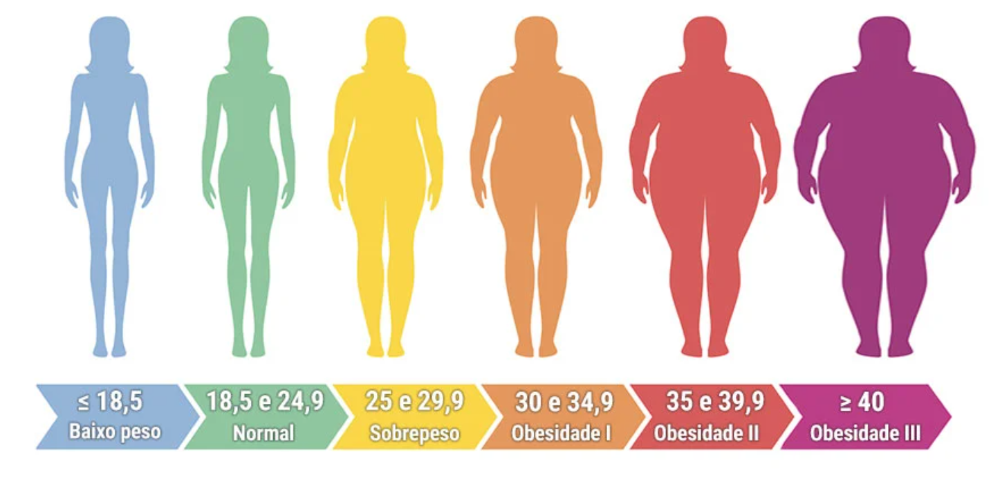

O Índice de Massa Corporal (IMC) é uma medida utilizada para avaliar se uma pessoa está dentro do peso ideal, considerando sua altura e peso.
Ele ajuda a identificar possíveis problemas como magreza, sobrepeso ou obesidade.
Apesar de útil, o IMC não considera fatores como massa muscular.
